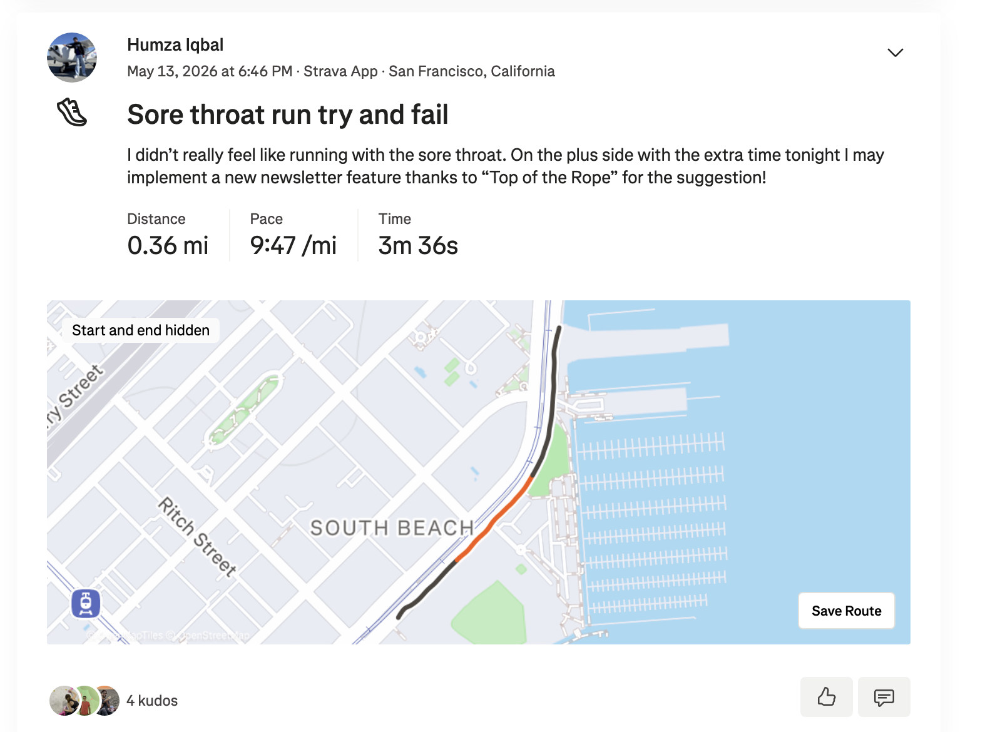
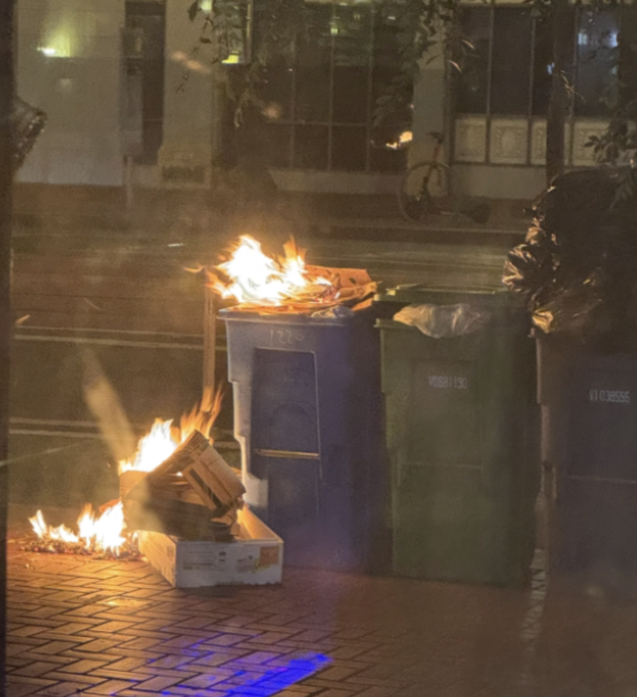
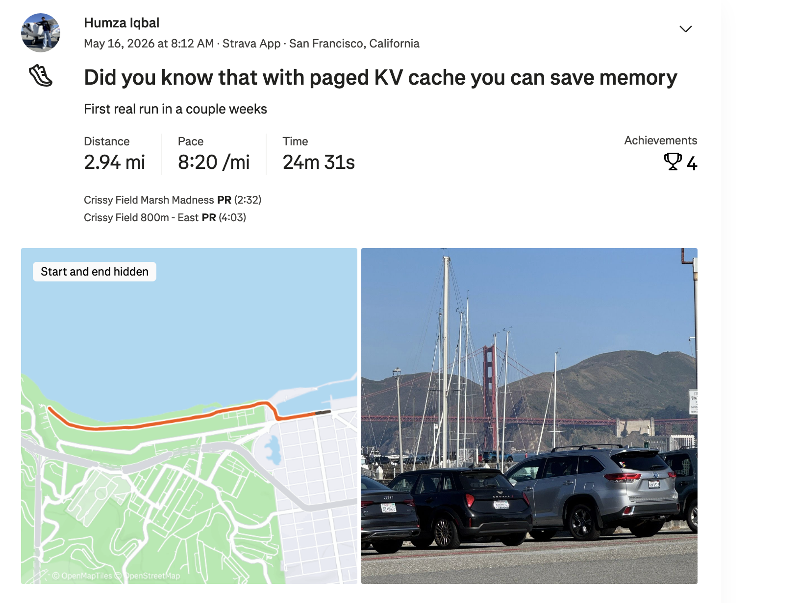
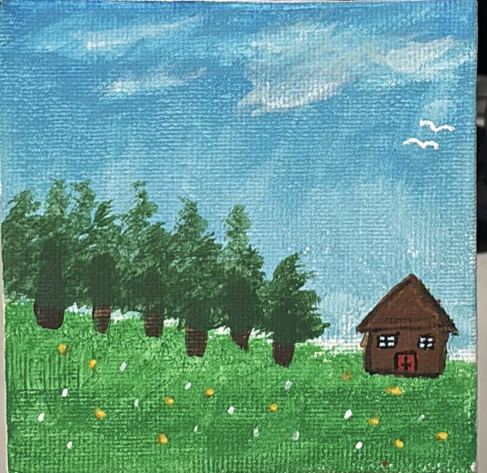
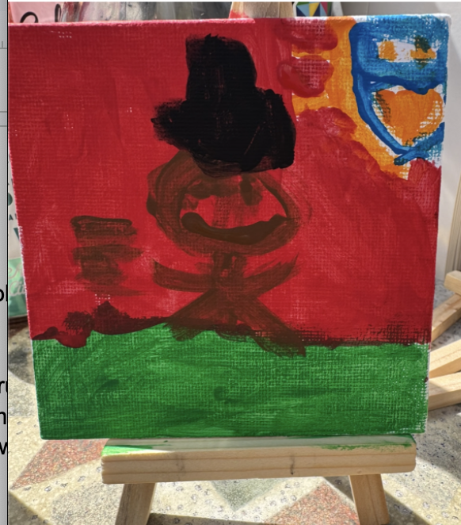
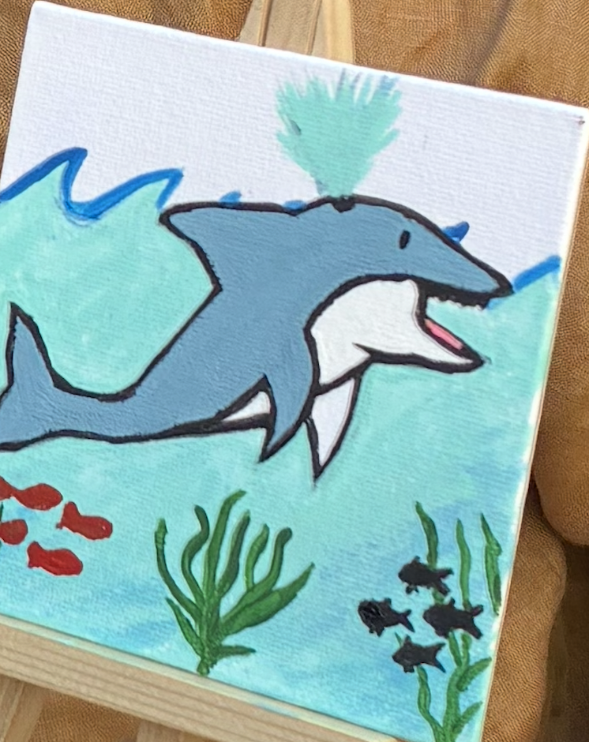
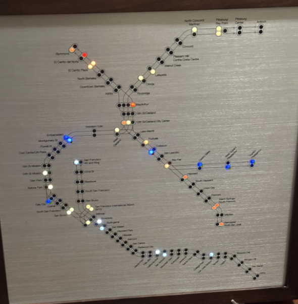

Shoutouts
Happy birthday “Granola Girlie”. You’re a really kind person and it's admirable to see the wide breath of volunteering that you do; not just the trash pickup but tutoring and the suicide hotline. That last one in particular is genuinely incredible and really shows your commitment to helping others.
Congrats to “The Fisherman” on achieving her goal of catching a keepable sized halibut! It seems you’ve leveled up your fishing skills and I’m very excited to see what you catch next!
Monday
Today after many hours of a model telling me that I’m absolutely right I caught up with “Top of the Rope” and got dinner at Abu Salim. At this point I think I’m a part time Abu Salim ambassador considering how many people I’ve brought there. A non exhaustive list includes “The Professor,” “The Quant,” “The Enabler,” “La Tacqueria Royalty,” “The Dentist,” “a friend of The Dentist who doesn’t have a nickname but you know I’m talking about,” “Always up for a disc-ussion,” “The Fisherman,” “The Philosopher,” and “The Slosher”. That’s at least 10 people just to that particular restaurant. If any of you reading this like Middle Eastern food and are down to grab dinner here (regardless of whether you’ve been or not) let me know, I’m happy to expand my ambassador powers :D.
Having the newsletter paid off here when toward the end of dinner I told her about the time when I wound up staying in a hotel in The Marina for a night and because we had to part ways I had to text her the story and instead of writing it all out I could just send her the newsletter. For anyone curious who hasn’t read this story it’s episode 37 https://trashtalesnewsletter.github.io/trash_tales_newsletter/posts/episode-37.html .
Tuesday
After some time trying and failing to debug gpt-oss with expert parallelism I went to government class today.
Today in class we spent a good amount of time reviewing the map of the political system in SF that we are going to have to know for the final exam. We have to know (among other things): all the elected officials in SF, how 5 different commissions and departments are picked, the hierarchy of law, advisory committees, and a timeline of SF charter revisions :D. This feels like a genuine class which reminds me of being back in college except here I’m actually attending all my classes and not skipping them like I used to back in the day.
As part of the class we also went over how to do research for our capstone project. For a bit of context at the end of the class we have to research some part of SF government we are interested in and write up a post. The rationale for this is to help us build up our political capital by showing that we can be taken seriously on important issues, and that we have to understand “What is” before thinking about “What we want to be”. The instructor is also pretty forward thinking about AI tools. He encouraged us to use AI saying that he can now do in just a few queries what used to take him hours. Of course he threw in a standard disclaimer about checking work and starting with good foundations in the prompt to make sure it gives grounded responses but even still I was impressed.
Wednesday
Today after communing with TensorRT I went to Midnight Runners only to find I had a sore throat and just … couldn’t run. Well ok maybe I could have but somehow I just felt incredibly unmotivated. Uncharacteristically so really. When I started the run the lactic acid build up was really annoying. I thought to myself “Ok I guess I could keep going or … I could not”. There wasn’t anyone there I really wanted to talk to today. Perhaps if some of my runner friends were there like “Sergeant Sassy,” “The Quant” or someone else I would have had the motivation to push through. Instead I pushed my way onto the MUNI and went home. I still logged what I had on Strava though because of course I did

What’s worse is I spent a good chunk of the time just watching Re:Zero rather than doing anything productive or newsletter worthy. This is especially bad since a reader noted that last weeks issue of the newsletter was not very eventful compared to usual and I was trusted to rectify that this week. Well so far I’m not sure we’re off to the best start (or since we’re 3/7th of the way through, middle?). In any case, I was just lazy today. On the plus side I did highly enjoy the episode of Re:Zero I watched. It’s a good anime sir.
On an unrelated note the answer is Stowe lake.
Thursday
Once I satisfactorily delivered shareholder value I caught up with “The Sound of Startup” for dinner. I think one of the highlights of this was reminding her that there is a gubernatorial primary in June and I convinced her to do some research and make an informed decision :D.
Afterwards I went to bar night with “The Mosher” and “The Bartender”. For the most part it was a pretty typical bar night with the exception of the trash can fire someone lit nearby. We all wound up helping to put it out which was honestly kinda fun.

Thankfully the fire wasn’t particularly big or spread all that much so it felt pretty safe. All we had to do was take a bunch of water from the bar assembly style and put it out; and I got a free pear juice as a result so it was definitely a win.
Friday
After another day communing with the kernels I met up with “The Shadow Brigade” and her boyfriend. I heard a lot about him and it was fun to meet him for the first time! We got tacos in The Castro and then hung out in Dolores Park for a while. The best part was definitely when we went down the kids slide and mogged on all the youth.
There is no maximum age requirement to have fun
We also went to Garden Creamery on the off chance the Mugicha flavor was there but sadly it still wasn’t.
“The Shadow Brigade’s” boyfriend also convinced me that for my next pair of headphones I should get Apple Headphones over Beats. I listened to some music on his headphones and I have to admit the audio quality is much better!
As we part ways “The Shadow Brigade” tells me that she wants to have my lamb pasta given how much of a pasta fan she is so we decide on tomorrow for her and her boyfriend to come over and eat my food.
From there I went to “The Mosher’s” place to play boardgames with him and “The Bartender”. We primarily played an engine building game set in Paris. I think it has a name but I forgot what it was called so I’ll make up one based on the vibe of the game: It’s called “Gang Wars: Controlling the Croissant”. In “Gang Wars: Controlling the Croissant” the goal of the game is to capture as many different parts of Paris as you can and rule over different boroughs while also setting up outputs, avoiding Interpol, and more. Not since the days of Dune Imperium have I played an engine building game as elaborate as this where the first time setup can take 20+ minutes.
While “Gang Wars: Controlling the Croissant” wound up being quite fun, I think I made a bit of a strategic blunder in overindexing on certain parts of the game and ignoring others. There is a specific mechanic called verses which is hard to explain but think of it as cards you buy that give you effects later. I didn’t realize til late game how good these effects can be and I do wish I bought more of these cards instead of blindly trying to expand my territory too naively. Next time I’m gonna go and rule the whole Croissant.
Saturday
The day begins with Marina Run Club. I was hoping for a “Top of the Rope” cameo before she headed off on her 10 mile run but it seems she was off doing mysterious “Top of the Rope” things. Thankfully instead I found two of my other MR friends that don’t have newsletter nicknames. Fun fact though one of them is dating the person who hired “The Politician” to his current job which is fun.
This is the first run I’ve done in over 2 weeks now since I totally skipped out on running last week and I was definitely dreading it. I wondered if I was gonna totally lose all my running skills over the last two weeks and flop around like a fish. Thankfully no such flopping was done and I managed to make it through the run pretty alright

After run club, I went to trash pickup. Sadly this is going to be “Not a matcha bitch’s” last trash pickup before he goes to UCLA to kickass in his residency. We at the South Mission trash pickup are greatly going to miss you “Not a matcha bitch” and your legacy will be forever commemorated as we walk by Tadaima and look on in scorn at the matcha bitches littering like the punk ass hoes they are. Since “The Notetaker” was away I led trash pickup today which was mostly fine except at the same time “La Tacqueria Royalty” and “The Dentist” were picking up bibs for Bay to Breakers and I asked them to pick up mine. Unfortunately they needed a QR code from me for my registration and I was a bit busy coordinating people to go pick up trash so I opted not to look for the code and figured racing without a bib would probably be fine.
After pickup I went to a cake party / painting session hosted by “This little piggie didn’t go to the slaughter house”. One general tip for a cake party that I think is helpful is to understand that it is in fact a cake party and not a board game event before you ring the door bell without a cake or any such thing to bring. Ultimately it wound up being fine but I did feel a bit bad. A bunch of people came to this party including “The Quant,” “The Raja of Rhythm,” “The Yogi,” “The Fisherman” and a bunch of others as well. There were a wide variety of cakes including a bun cake, a cheesecake, a strawberry cake, a cake that was a combination of a cake and (a cookie?), and possibly another that I can’t remember right now. I don’t eat cakes so I can’t comment on their quality but if the smiles on everyone's faces were anything to go by I’m going to go ahead and say they were great.
After the cakes we went to the backyard and did some watercolor painting. We sat outside and painted on these small little canvases like sophisticated Saturdayers. Me, “The Quant,” and “The Fisherman” all made some paintings. As a little game see if you can guess whose is whose.



Alright have you made your guesses? Remember no cheating. If you get it all right let me know, or just let me know what your guesses were anyway. The answer is …
The one with the house was “The Quant,” the one of the person running with a top hat was mine, and the one with the dolphin was “The Fisherman”.
After the party I went to Goat hill pizza for “Granola Girlie’s” birthday party. She had a fun concept for a birthday where she wanted to go around to all the places offering free stuff or discounts for a birthday.
I got there just at the tail end of Goat hill and we headed off towards Tiger hill piercing so “Granola Girlie” and “The Notetaker” could get some ear piercings. Sadly they were booked out for the day so we had to go onwards to our next destination. We wound up going to Sephora next and I think the birthday gift was a fragrance of some sort but honestly I can’t articulate it too much better than that. Afterwards we went to Miette where I got some vegan cinnamon gummy bears which were certainly very bracing. It was a flavor the likes of which I certainly wasn’t expecting. “Granola Girlie” got a cupcake that looked very nicely decorated. Finally we went to Ben and Jerry’s but sadly “Granola Girlie” wasn’t registered in the system so she couldn’t get her free ice cream :(.
At this point I needed to go and get ingredients to cook pasta so I dash off only to run into “The Raja of Rhythm” and “The Yogi” who were going to meet up with “Granola Girlie”. Like the responsible host I am, I decide “what the hey” and decide to keep hanging out with them for longer. After chilling by Ben and Jerry’s some more I invited all 3 of them to come to pasta night with me and to come shopping with me. Once we get the stuff I go back and start cooking the pasta. Unfortunately I forgot the spinach which they graciously go and get. Once everything is set up “The Shadow Brigade,” her boyfriend, and “The Quant” roll up and we all eat pasta together. Thankfully everyone including “The Shadow Brigade” seemed to like the pasta.
“The Shadow Brigade” got me a birthday / christmas gift which was an electronic board that gives real time updates on the BART trains which is super cool!

This is easily one of the most unique, thoughtful, and cool gifts I have received in a while and I’m super grateful for it!! Thanks Shadow!!
Sunday
It’s the most … wonderful time … of … the year! Way better than Christmas, it’s Bay to Breakers! I go over to the start line and meetup with “The Dentist” and “La Tacqueria Royalty”. The race starts generally at 8 but there are so many corrals that for ours it takes us a half hour to actually start the race. As we wait we see tortillas being thrown around by unknown people. I thought it would be fun to catch one but from what “La Tacqueria Royalty” said, being hit with one actually hurts.
While I don’t wind up catching one of them we do end up starting the race. For anyone unfamiliar it’s a race across the city from Embarcadero (Bay) to Ocean Beach (Breakers). Funnily enough Bay to Breakers 2024 was the first time since high school I ever actually ran. Back when I did that race I was constantly stopping and starting because I couldn’t run very long continuously, now running at community pace even with a backpack was actually pretty reasonable. During the first stretch of the race I see what I think is one of the funniest costumes of someone wearing a Mile 3 sign which genuinely confused me for a bit since I knew when I first saw the costume we were not at Mile 3. Very impressive bait. Also we were running behind a couple in a Mermaid man and Barnacle Boy costume for a while that wound up being some friends of “The Fisherman” I met at her new job party roughly 2 months ago.
After making it to Hayes Valley we meet up with “The Enabler,” “Always up for a disc-ussion” and a couple other friends, take some pictures, and recruit “The Enabler” to come with us for the rest of the race. From there we continue the race pretty smoothly until we reach the finish line. As we finish I see “The Ravenkeeper” rocking a dino onesie, what are the odds we would finish at exactly the same time :D.
As we finished the race I went to go get a medal only to discover they ask to see a bib … the thing I thought wouldn’t really matter yesterday. Well apparently it matters for getting the medal. On the one hand I guess that makes sense as a way of softly punishing race bandits while still mostly letting them race but on the other I’m annoyed because I did actually pay for the race. I told the people handing them out such and they said there is a booth I can go to and ask them. I want to go there but the line is really long and I realize it honestly may not be worth it so I decide to skip.
We walk around the post race festival in GGP and see some of the food and snacks that they have. It looks cool and all but honestly I wasn’t overly impressed and then we go back to the Conservatory of Flowers and meetup with “Always up for a disc-ussion” and some others. I can’t stick around for too long but before I go I finally give “La Tacqueria Royalty” a belated birthday gift that I got him back in episode 38 in Barcelona. One of the funny things about these newsletters is I can measure just how late I am in giving the gift and I can say that I am 37 weeks late 😅.
Once I give the gift I head home to Mill Valley and catch up with my family. My parents are going to be leaving in a couple days for a pilgrimage known as Hajj which is very exciting! It’s a 5 day pilgrimage which every Muslim is required to do at least once in their life that involves going to Saudi Arabia and going through a number of different religious sites including Mecca, Medina, and others.The less exciting part is that they injured their backs and need some help moving heavy stuff which is where I come in. For someone of my normal back it’s pretty easy to get all the stuff where it needs to go. Plus it was good that I came and helped out my parents at least once before they left since I hadn't seen them in a couple months.
Once I go back to the city I walk around briefly and run into “Mr. Greenflag”. We catch up and I impress him with my reading comprehension on his insta stories since I know exactly how he’s been since I last saw him. I learned he is planning a trip to Central Asia including Uzbekistan which I really want to go to. Unfortunately this means I may not be able to look at those stories because one of my goals for that trip is to go completely blind and have no idea what to expect.
From there I head home and do a bit of work before wrapping up the day.